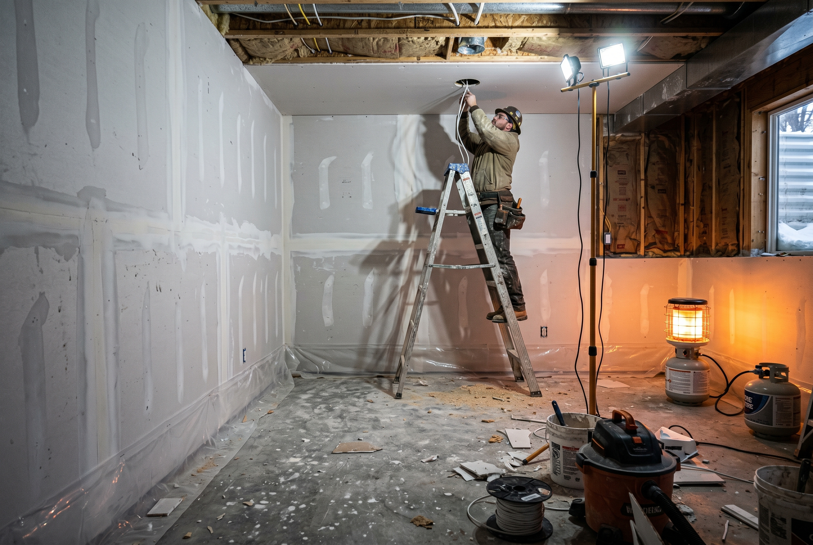

Published November 30, 2026 • By Black Ridge Contracting
Every year between January and March we hear from homeowners who want their roof replaced by April or their concrete poured in May, and every year a portion of them get pushed into June or July because the calendar is already booked. The reality is that Central Iowa contractor schedules for spring 2027 are filling up right now, in late November and early December of 2026. If you have outdoor work to do in spring, the time to lock it in is before year end.
Here is what we tell homeowners about planning year end for spring work.
Why Spring Calendars Fill So Early
Three things drive the spring backlog. First, the weather window. Roofing, siding, and concrete all need consistent temperatures and dry conditions. In Iowa, that effectively means mid March at the earliest and only for the lucky ones. Most outdoor work runs from April through October, which is six months of capacity to absorb the entire year's demand for outdoor projects.
Second, deferred demand. Homeowners who put off work through winter all start calling at once in late February and March. Contractors take what they can fit in.
Third, the contractors themselves have material lead times. Specialty roofing materials, custom windows, fiber cement siding orders all have 4 to 8 week production windows. Booking in December means materials ship in March for an April start. Booking in March means materials don't arrive until May or later.
What to Do Now if You Have a Spring Project in Mind
Year end is the right time to do these steps:
- Get 2 to 3 contractor walkthroughs. Most contractors do free walkthroughs at this time of year because their crews are slowing down on outdoor work. Take advantage.
- Request written estimates from each. Not verbal numbers, written scope and price. This is what you'll compare.
- Pick your contractor and sign. Signed contract with a deposit puts you on the schedule. Most contractors will hold a spring slot for any signed customer.
- Finalize finish selections in January and February. Use the winter months to pick siding color, shingle profile, concrete finish, hardware, fixtures, anything that affects material orders.
- Permit paperwork goes in March. Most Iowa permits take 2 to 6 weeks. Submitted in March, approved in April, ready for an early April start.
If you follow this schedule, your project starts in the first viable weather window of spring 2027 instead of waiting in line behind people who called in March.

What Can Still Be Done During Winter
Not everything has to wait for spring. Through January and February, we keep running:
- Kitchen remodels. Indoor work, climate controlled, ideal winter project.
- Bathroom remodels. Same as kitchens, no weather dependency.
- Basement finishing. Major winter projects, the home is comfortable to work in and you're not blocking yard access.
- Interior painting. Best done in winter when humidity is lower.
- Foundation interior work. Waterproofing, finishing, anything inside the basement.
- Emergency roof repairs. If a tree comes down or you find an active leak, we work through winter for emergency response.
If you have indoor work to do, winter is often the best time because crews aren't fighting weather, materials arrive on time, and homeowners aren't trying to use the yard.
The Hard Cutoffs to Know
If you want spring 2027 work, here are the dates we tell our customers:
- By December 15: Walkthrough scheduled, written estimate received.
- By January 15: Contract signed and deposit down for any April or May start.
- By February 15: Finish selections finalized so material orders can go in.
- By March 1: Permit paperwork submitted.
- Early April: First viable weather windows for outdoor work.
Miss these dates and you're competing for slots that are already full.
Want a Walkthrough Before Year End?
We do free walkthroughs across Central Iowa through December. We will give you a written scope, written estimate, and a clear answer on when we can start. See our services or call (515) 219-4654.
Frequently Asked Questions
Schedule between November and January for April or May start. Most Central Iowa contractors fill spring calendars by mid February.
Kitchen, bath, basement finishing, and interior painting continue through winter. Outdoor work generally pauses December through mid March.
Get 2 to 3 walkthroughs, finalize scope, sign contract, put down deposit, finalize finishes through winter, submit permits in March.
Modestly, sometimes. The bigger win is calendar priority, getting on the schedule before competitors fill April and May.